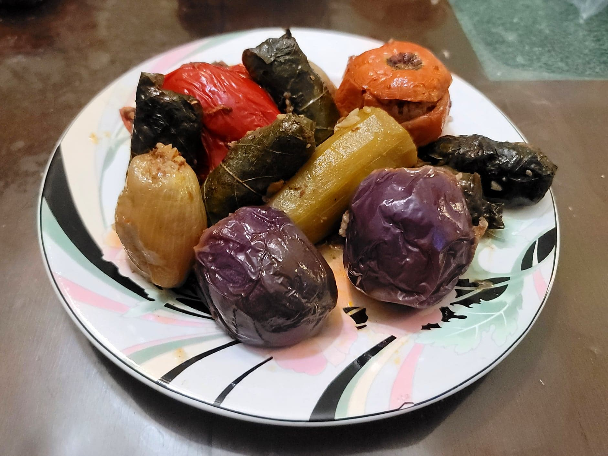

Iraqi Dolma

Ingredients:
Stuffing:
- 1 1/2 lb Ground beef, 90/10
- 4 cups Medium grain rice, well rinsed
- 2 medium or 3 small Onions, finely diced
- 2 Red or Orange bell peppers, finely diced
- 1/2 cup Olive oil
- 1/2 cup Tomato paste
- 1/3 cup Pomegranate molasses
- 1 tbsp Salt
- 1/2 tbsp Black pepper
Vegetables:
- 6 Indian eggplants, stem ends removed
- 2 Zucchini, peeled and halved
- 4 small Bell peppers, or about 8 small Sweet peppers
- Optional: 1-2 Tomatoes, firm
- 4 Onions, ideally less round and more narrow
- 1-2 bunch Swiss chard
- 20-30 Grape leaves, let soak in water for 1 hour if jarred
- 1/4 cup Vegetable oil
Cooking Liquid:
- 5 cups Water
- 4 tbsp Tomato paste
- 1/2 tbsp Salt
- 1 tsp Black pepper
- 1/4 cup Pomegranate molasses
- 1 tsp Citric acid
Instructions:
- Prepare the stuffing by placing all the stuffing ingredients into a large mixing bowl and mixing thoroughly.
- For eggplants and zucchini, use a corer to hallow out the vegetables. Reserve the removed insides. Mostly cut off the stem ends of the peppers and the tomatoes, leaving a little bit to act as a hinge. Core them and save the insides of the tomatoes. Cut off both ends of each onion and then remove the peel. Make a deep cut just to the center of each onion and place into a microwave for about 1 minute, or just enough to soften the layers. For the swiss chard, blanch in boiling water for just 10-20 seconds.
- Place the oil and vegetable insides into a very large pot. Then start to stuff the vegetables and begin to place them into the pot, making sure to only fill them roughly 3/4 of the way to leave room for the rice to expand. Start with the firmer vegetables like the eggplant, zucchini, and bell peppers. Then the tomatoes. For the onions, carefully separate each layer and wrap it around a small amount of filling. Tuck it into any crevices between the larger vegetables. Then for the swiss chard and grape leaves, take some filling and wrap it in the leaves like a miniature burrito. For the swiss chard, you may need to trim off large stems and cut the leaves into 2-3 smaller pieces. Place into the pot seam-side down and fit them into any remaining crevices. If you have any remaining filling, you can add more stuffed onions.
- Combine the cooking liquid ingredients and stir until there are no lumps. Pour the liquid over the stuffed vegetables until it reaches halfway up the topmost layer. Lay a plate over the vegetable to keep them in place. Cover and place over high heat. Bring to a boil and cook for 15 minutes.
- Then remove the plate and shake the pot a little to help any liquid fall to the bottom of the pot. Reduce the heat to medium and let cook another 15 minutes.
- Then decrease the heat to low. Cook for 1 more hour.
- Check that the filling has completely cooked. Then remove from heat. Let rest 15-20 minutes before serving. Traditionally, the pot would be flipped upside down onto a platter to serve. Alternatively, just scoop it from the pot. Serve hot.